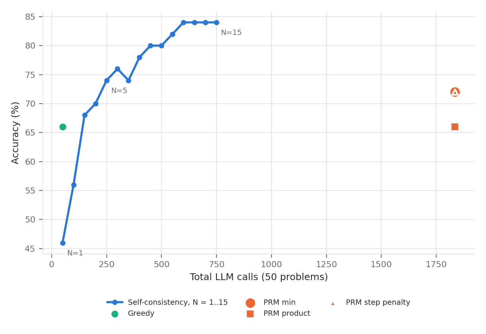
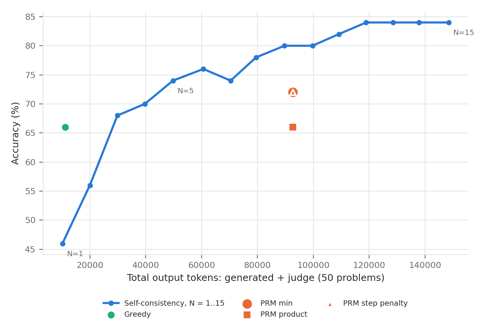

Student Name: Hussnain Ali Murtaza | Roll Number: 25280069 | Date: 15 November 2026 Generator: Qwen2.5-1.5B-Instruct (fp16, cuda:0). Judge: Qwen2.5-7B-Instruct (4-bit NF4, cuda:1). Benchmark: data/gsm8k_test_50.jsonl (50 problems).
Section 1: Benchmark Results and Compute Scaling
1.1 Summary Results Table
Method
Accuracy (%)
95% CI
Gen. Calls
Judge Calls
Total LLM Calls
Avg Gen Tok / Prob.
Avg Judge Tok / Prob.
Total Time (s)
Greedy (N=1)
66.0
[52, 78]
50
0
50
221.5
0.0
430.4
Self-Consistency (N=5)
74.0
[62, 86]
250
0
250
994.2
0.0
571.3
Compute-Matched SC (N=15)
84.0
[74, 94]
750
0
750
2970.6
0.0
1342.6
PRM Best-of-5 (min)
72.0
[60, 84]
250
1585
1835
994.2
858.9
3681.1
PRM Best-of-5 (product)
66.0
[54, 78]
250
1585
1835
994.2
858.9
3681.1
PRM Best-of-5 (step_penalty, λ=2.0)
72.0
[60, 84]
250
1585
1835
994.2
858.9
3681.1
K̄ = 1585 / 250 = 6.34 judged steps per path, so the judge row is 250 × K̄ = 1585 calls. The PRM rows share one candidate pool and one set of step scores (PA3 §5.3). Their time is SC@5 sampling (571 s), plus judging (≈3110 s, ≈1.96 s per judge call), plus selection (<1 ms). SC@15 reuses the 5 shared samples and draws 10 more.
1.2 Scaling Plots

Fig. 1. Accuracy vs. total LLM calls. The SC curve covers N = 1…15 (from sc_scaling_curve.json); orange markers show the PRM Best-of-5 variants.

Fig. 2. Accuracy vs. total output tokens (generated + judge). PRM-min/step-penalty sits at 92.7k tokens for 72%; SC passes 80% at ≈90k tokens.
SC accuracy rises steeply from N=1 (46%) to N=5 (74%), then more slowly to a plateau of 84% from N=12. Every token gets the same fixed amount of computation, so the only ways to spend more on a problem are to write more tokens (step-by-step reasoning) or to make more calls and combine them. SC is the second route: “generate more, then select well”. A single T=0.7 sample (46%) is worse than greedy (66%). On a task with one right answer, the most likely token is usually right. Pure temperature sampling with truncation switched off (top_k=0, top_p=1.0) keeps the long tail of unlikely tokens, so one bad draw can derail the rest of a solution; it also caused 11.3% format failures (PA3 §4.2). Voting cancels these independent errors once N ≥ 3.
1.3 Statistical Analysis and Discussion
Comparison (paired, 50 problems)
PRM won
SC won
Both correct
Both wrong
Two-sided sign test
PRM-BoN (min) vs. SC (N=5)
0
1
36
13
p = 1.00
PRM-BoN (min) vs. Compute-Matched SC (N=15)
0
6
36
8
p = 0.031
PRM-BoN (product) vs. SC (N=5)
0
4
33
13
p = 0.125
Confidence intervals. Table 1.1 shows 95% bootstrap CIs (1,000 resamples over problems, seed 5326). With only 50 problems each interval is about ±12 points wide, and every pair of intervals overlaps.
Discussion. PRM-guided Best-of-5 does not beat candidate-matched SC@5. The difference is 72% vs. 74% from a single discordant problem, which is statistical noise. Because the two methods choose from the same five candidates, PRM can only beat SC when the correct answer is in the pool but is not the majority. That happened on only 4 problems: pass@5 = 41 vs. SC@5 = 37. PRM recovered none of them. PRM also loses to compute-matched SC@15 (72% vs. 84%), and here the paired test is significant (0 wins, 6 losses, p ≈ 0.03) even though the CIs overlap. The paired test is the right tool because both methods see the same problems. In this setting the computation lever (more samples) beat the system lever (an external verifier placed around the frozen model).
Section 2: Path Score Aggregation Ablation
2.1 Aggregation Ablation Table
Strategy
Lambda
Accuracy (%)
Tie Rate (%)
min
null
72.0
84.0
product
null
66.0
46.0
step_penalty
0.0
74.0
70.0
step_penalty
0.5
72.0
70.0
step_penalty
2.0
72.0
70.0
2.2 Analytical Breakdown
Why product is close to min with binary scores. With rt ∈ {−1, +1} the clamped probabilities are only 0.99 or 0.01, so a path with k invalid steps out of K scores 0.99K−k·0.01k. One invalid step costs a factor of about 100, while extra valid steps cost only 1% each. As a result, product ranks paths first by their number of invalid steps, which is the same coarse 0-vs-≥1 split min uses (eq. 5–6, PA3 §2.4). The difference is that among all-VALID paths, product does not tie: 0.994 > 0.997, so it prefers the shortest path. That cuts the tie rate from 84% to 46% and switches off the majority vote that min relies on. The shortest path is often a short “plan-only” chain whose wrong final number is never checked. This happened on test_10 (picked 165, gold 460) and on test_12, test_27 and test_50, which explains the drop to 66%. A length bias is never a calibrated confidence.
Filter-then-vote with min. With binary scores, min gives +1 to every path the judge marks all-VALID and −1 to everything else. In 42 of 50 problems (84%) at least two paths tied at +1, so select_best_path fell back to a majority vote among them. PRM-min is therefore “SC@5 restricted to all-VALID paths”. It changes the SC@5 answer only when the filter removes enough majority votes to flip the result. In this run that happened once, and it hurt.
Step-penalty dynamics. With k invalid steps out of K, the mean is 1 − 2k/K, so Spenalty = 1 − k·(2/K + λ). A fully valid path scores exactly 1.0 for every λ and every length, so the ties at the top are the same for all λ, which is why the tie rate is 70% throughout. λ only matters when no candidate is fully valid. With λ = 0 the score depends on the error fraction: one slip in a 10-step path (0.8) beats one slip in a 3-step path (0.33). With λ = 2 the error count dominates and the ranking matches min. λ = 0.5 sits in between, and in practice it made the same choices as λ = 2. λ = 0 scored 74% against 72%, a difference of a single problem. The tie rate (70%) is lower than min’s (84%) because min also ties among paths that each have errors, all at −1.
2.3 Why yes/no verdicts instead of continuous scores (optional bonus not attempted)
The optional product_logprob variant (pt = softmax over the judge’s logits for VALID vs. INVALID) was not implemented. The binary design was a deliberate choice:
It matches the task. A math step is either sound or not (PA3 §2.3), and the required aggregate_path_score contract is defined on ±1 scores.
It is robust and simple. Parsing the text verdict works with any generation interface and needs no access to the internal logits of a 4-bit model. It also avoids the tokenization trap: “VALID” and “INVALID” split into different multi-token sequences, and a leading space changes the tokens. The generated text also gives a rationale, which the judge audit needs.
Instruction-tuned models are often over-confident. Their verdict-token probabilities tend to sit near 0 or 1, so continuous scores might carry little more information than the yes/no answer.
How it could be done. Our prompt makes “Verdict:” the first thing the judge writes, so the verdict is decided at a single position. Option 1: read the logits there for the first token of “ VALID” and “ INVALID”. If both words share their first token, option 2 is to teacher-force both full continuations and compare their total log-probabilities. Either way pt comes from the same 1,585 judge calls, so the cost in extra calls or tokens is essentially zero.
Expected impact (a projection, not measured):
Ties would almost disappear. The 84% tie rate would drop to near 0%, so the PRM would rank paths by judge confidence instead of falling back to the vote.
The ceiling is low. Selection still uses the same 5 candidates, so even a perfect scorer is capped at pass@5 = 82% (41/50). That is below SC@15’s 84%, so no PRM score, discrete or continuous, could have beaten compute-matched SC in this run. Over SC@5 there are only 4 recoverable problems (+8 points at most).
The realistic outcome is mixed. Continuous scores help when the correct path is a minority but the judge is more confident in it. They hurt by removing the voting safety net: the discrete product rule already showed that breaking ties with a weak signal (length) cost 6 points. A plain product of probabilities also keeps the short-path bias, since every pt < 1. Using the mean log-probability, or a confidence-weighted vote, would be safer than taking the arg-max. My expectation is roughly 70–76%: fewer ties and a cleaner tie-break, but not enough to change the conclusion that SC@15 wins.
Section 3: Failure Mode and Judge Error Analysis
Naming note: the case headings below use the template’s wording, where a “false positive” means a flawed step marked VALID. The confusion matrix in 3.2 treats INVALID as the positive class.
Case 1: Judge False Positive (flawed step marked VALID)
Problem: gsm8k_test_45. Charlie can make 10 candles per pound of beeswax; one pound plus wicks costs $10; each candle sells for $2. What is the net profit on 20 candles? (gold = 20)
Flawed step (candidate 1, step 1): Profit per candle = $2.00 − ($10.00 / 20 candles). 20 candles need 2 pounds, which cost $20, so the cost is $1.00 per candle, not $0.50.
Verdict & rationale: VALID, “The calculation correctly subtracts the cost per candle from the selling price.”
Root cause: the arithmetic inside the step is correct, but its premise misreads the problem. The judge checked the subtraction and not where the 20 came from. This 2-step path was the only all-VALID candidate (num_tied = 1), so min selected it outright and the PRM answered 30. A second, structural false-positive pattern is plan-only steps such as “Calculate Eliza’s earnings for the overtime hours” (test_10, candidate 3). They contain no number, so they are trivially VALID, and the wrong final number (165) appears only in the “Final Answer” line, which is never judged. 169 of 1,585 judged steps contained no digits at all.
Case 2: Judge False Negative (valid step marked INVALID)
Problem: gsm8k_test_05. Wendi gives each of her 20 chickens 3 cups a day; 15 cups in the morning and 25 in the afternoon. How much feed is needed for the final meal? (gold = 20)
Valid step flagged (candidate 2, step 5): The size of Wendi’s flock is 20 chickens.
Verdict & rationale: INVALID, “…it introduces new information about the flock size without relating it to the feed distribution.”
Root cause: the step restates the problem correctly, and the prompt explicitly says restating is valid. The judge confused “not useful yet” with “incorrect”. A second example is gsm8k_test_14 (candidate 1, step 9): Combine like terms: x/3 − 1 = 5, which is a correct simplification of 2x/3 − 2 − x/3 + 1 = 5. The judge flagged it INVALID while restating the same equation in its rationale. Its symbolic algebra in LaTeX is unreliable, which is a known weakness: exact symbolic calculation is better handed to a tool (e.g., a CAS or Python) than to an LLM.
Case 3: Mode Collapse / Shared Flawed Premise
Problem: gsm8k_test_45 (above). Candidates 0, 1, 3 and 4 all answer 30. Greedy, SC@5, SC@15 and all three PRM variants answer 30; gold is 20.
Common flaw: every “30” path charges only $10 in total for 20 candles (one pound) instead of 2 × $10 = $20. Only candidate 2 used a different premise (20 pounds, answer −160). No sample in the pool has the correct reasoning.
Root cause: sampling at T=0.7 explores wording, not interpretation. The 1.5B model has one dominant misreading, so the samples are correlated, and voting amplifies a shared error instead of cancelling it. The judge did flag the bad premise in three of the paths. But a verifier can only select, never repair, so when every candidate is wrong (9 of 50 problems at N=5) search cannot recover. This is the basic gap of independent sampling followed by reranking: compute is spent finishing chains that already failed early, and nothing steers them back. gsm8k_test_09 shows the same pattern: 6 of the 15 samples answer 315 (e.g., candidates 0 and 1 add the return-trip distance instead of subtracting it), and every method outputs 315 (gold 45).
3.2 Human Audit of Judge Decisions
I hand-labelled 30 judged steps (14 judge-INVALID, 16 judge-VALID) from gsm8k_test_05, 09, 14 and 45 under local-validity semantics (PA3 §2.2). The labels are in outputs/human_audit.csv.
Metric
Count / Value
True Positives (Judge: INVALID, Human: INVALID)
10
False Positives (Judge: INVALID, Human: VALID)
4
True Negatives (Judge: VALID, Human: VALID)
13
False Negatives (Judge: VALID, Human: INVALID)
3
Judge Precision (INVALID detection)
71.4% (10/14)
Judge Recall (INVALID detection)
76.9% (10/13)
The 4 false positives are a correct restatement (test_05) and three correct algebra or arithmetic steps that follow an earlier error (test_14 ×2, test_45 −160). These show error cascading: across the full run, 58.5% of steps after a path’s first INVALID were also marked INVALID, against a 19.6% base rate, which violates local validity. The 3 false negatives are premise or reading errors with correct arithmetic (test_45 ×2: “$10/20 candles”, “10 pounds for 20 candles”; test_09: “20 minutes” instead of half an hour). Caveat: the sample deliberately over-represents hard problems, so these rates are illustrative rather than an unbiased estimate. At the path level the judge does discriminate: 86.3% of correct-answer paths were all-VALID, against 27.5% of wrong-answer paths, and its per-step INVALID rate was 6.1% vs. 29.2%.
3.3 Discussion Question
A 7B judge that is stronger than the 1.5B generator catches the errors the generator cannot see in its own work: wrong arithmetic (80 mph × 2 h during standstill traffic), dropped quantities, and some misread premises. When the evaluator is the same model that made the mistake, it tends to share the mistake; a separate, larger judge breaks that correlation (PA3 §3.1.1). Its remaining blind spots are premise or reading errors hidden behind correct arithmetic, unchecked final-answer lines, and LaTeX algebra. With self-verification by the 1.5B model I would expect: (i) correlated errors, because the verifier shares the generator’s misreading (e.g., $10 for 20 candles) and approves it; (ii) a bias toward agreeing, i.e. approving its own fluent text; (iii) weaker format compliance, so more unparseable verdicts that default to −1; and (iv) more arithmetic mistakes inside the verification itself. Together these would push the verdicts toward noise, and min-pooling would then do no better than SC.
Section 4: Test-Time Compute Efficiency Analysis
10× greedy budget: greedy generated 11,076 tokens over 50 problems, so the budget is 110,760 tokens (≈2,215 per problem), counting generated + judge output tokens.
Within budget: SC at N=11 uses 109,128 tokens and scores 82%; N=9–10 already reaches 80% at ≈90–100k. PRM Best-of-5 uses 49,709 generated + 42,947 judge = 92,656 tokens for 72%, which is 8 points below SC at the same spend (Fig. 2).
Generator vs. judge asymmetry.
Calls: PRM makes 1,585 judge calls on top of 250 generation calls (K̄ = 6.34 judge calls per sample), 7.3× as many LLM calls as SC@5.
Tokens: a judge call outputs only ≈27 tokens against ≈198 for a generation call, so judge tokens are only 46% of PRM’s token spend (42,947 of 92,656). Output-token counts therefore understate the judge’s real cost. Each call runs a model with ≈4.7× more parameters and re-reads a long prompt: the question plus every earlier step, so the prefill grows roughly as K² per path. The steps are also judged one after another rather than in a batch.
Time: judging took ≈3,110 s (≈62 s per problem, ≈1.96 s per call), against 571 s to sample the 5 candidates (5.4× more) and 771 s for SC@15’s 10 extra samples.
Recommendation: pure repeated sampling (large-N SC). (1) The SC curve is still rising across this budget range, while PRM is stuck below SC@5 because it can only pick from 5 samples and 9/50 pools contain no correct answer. (2) Token counts flatter PRM: one judge call outputs only ≈27 tokens but processes a long prompt, so wall-clock time was 3,681 s for PRM vs. 1,343 s for SC@15. (3) SC needs no second model, so it runs in half the VRAM. A PRM is only worth paying for if it can (a) break ties with calibrated scores (the logprob variant) or (b) steer generation step by step (beam or tree search over partial solutions), rather than reranking finished chains.
Section 5: Limitations and Reproducibility
Environment: Kaggle, 2 × Tesla T4 (16 GB each). Generator in fp16 on GPU 0 (≈3 GB of weights); judge in 4-bit NF4 on GPU 1 (≈5–6 GB of weights). These are estimates from parameter counts; VRAM was not logged. Total wall-clock time was 4,913.7 s (≈82 min). Python 3.13.16, torch 2.11.0+cu130, transformers 5.20.2, bitsandbytes 0.50.2; Hugging Face transformers/accelerate only (PA3 §1.3). Seed = 5326 + problem_index, set before each problem’s sampling. Sampling used T=0.7, top_k=0, top_p=1.0, repetition_penalty=1.0, max_new_tokens=512. The judge used greedy decoding with max_new_tokens=96 (PA3 §3.4). Per-problem results were written incrementally to outputs/per_problem.jsonl; the whole pipeline is run_all.py.
Methodology: our PRM is a zero-shot prompted stand-in. A true PRM such as the one trained on PRM800K (Lightman et al., 2023, ≈800k human step labels) learns what a wrong step looks like and outputs a calibrated probability per step. A learned value function goes further and estimates the probability that a partial solution will reach the correct answer, which makes scores comparable across paths and usable for guiding search. Our judge has had no training on this generator’s errors. It only rates whether the written step looks locally plausible, not whether the path will succeed, and its output is a binary verdict that is uncalibrated and sensitive to prompt wording. Concretely: it ignores local validity (error cascading), never judges the final-answer line, accepts empty plan-only steps, and runs 4-bit quantised. Other limitations: only 50 problems (CIs about ±12 pts), a single seed, and prompt-only formatting (11.3% of samples unparseable; constrained decoding, which blocks format-breaking tokens, would remove this).